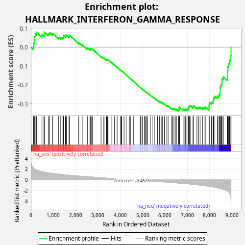
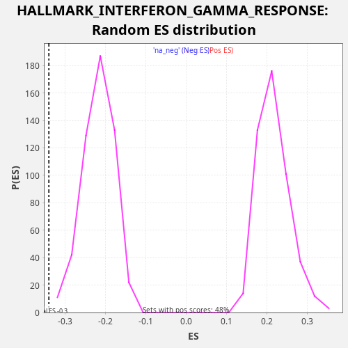

| Dataset | star_PE_rank_metric |
| Phenotype | NoPhenotypeAvailable |
| Upregulated in class | na_neg |
| GeneSet | HALLMARK_INTERFERON_GAMMA_RESPONSE |
| Enrichment Score (ES) | -0.33942053 |
| Normalized Enrichment Score (NES) | -1.5627649 |
| Nominal p-value | 0.0 |
| FDR q-value | 0.03218335 |
| FWER p-Value | 0.209 |

| SYMBOL | RANK IN GENE LIST | RANK METRIC SCORE | RUNNING ES | CORE ENRICHMENT | |
|---|---|---|---|---|---|
| 1 | ISOC1 | 122 | 2.209 | 0.0056 | No |
| 2 | ADAR | 135 | 2.181 | 0.0233 | No |
| 3 | IFIT2 | 154 | 2.115 | 0.0398 | No |
| 4 | SSPN | 179 | 2.028 | 0.0549 | No |
| 5 | LYSMD2 | 192 | 2.001 | 0.0711 | No |
| 6 | PLA2G4A | 256 | 1.854 | 0.0802 | No |
| 7 | HERC6 | 497 | 1.553 | 0.0667 | No |
| 8 | BTG1 | 584 | 1.469 | 0.0698 | No |
| 9 | EIF4E3 | 602 | 1.457 | 0.0807 | No |
| 10 | IL10RA | 779 | 1.334 | 0.0725 | No |
| 11 | PML | 846 | 1.291 | 0.0763 | No |
| 12 | SRI | 978 | 1.213 | 0.0721 | No |
| 13 | SOD2 | 1244 | 1.074 | 0.0516 | No |
| 14 | IFIT1 | 1337 | 1.028 | 0.0502 | No |
| 15 | PTGS2 | 1396 | 1.005 | 0.0524 | No |
| 16 | CD38 | 1460 | 0.982 | 0.0539 | No |
| 17 | IFIT3 | 1463 | 0.981 | 0.0623 | No |
| 18 | STAT1 | 1546 | 0.944 | 0.0613 | No |
| 19 | TRIM14 | 1589 | 0.925 | 0.0646 | No |
| 20 | NMI | 1709 | 0.872 | 0.0588 | No |
| 21 | CMPK2 | 1724 | 0.868 | 0.0648 | No |
| 22 | TNFAIP6 | 2143 | 0.723 | 0.0239 | No |
| 23 | ST3GAL5 | 2298 | 0.664 | 0.0123 | No |
| 24 | LAP3 | 2519 | 0.593 | -0.0074 | No |
| 25 | OASL | 2543 | 0.586 | -0.0049 | No |
| 26 | ARID5B | 2647 | 0.552 | -0.0117 | No |
| 27 | STAT4 | 2661 | 0.549 | -0.0083 | No |
| 28 | PIM1 | 2720 | 0.530 | -0.0103 | No |
| 29 | CD40 | 2758 | 0.518 | -0.0099 | No |
| 30 | TXNIP | 3140 | 0.400 | -0.0495 | No |
| 31 | CD274 | 3238 | 0.371 | -0.0572 | No |
| 32 | NUP93 | 3275 | 0.357 | -0.0582 | No |
| 33 | RIPK2 | 3368 | 0.331 | -0.0657 | No |
| 34 | PDE4B | 3386 | 0.327 | -0.0647 | No |
| 35 | TRIM26 | 3430 | 0.314 | -0.0668 | No |
| 36 | GCH1 | 3455 | 0.307 | -0.0669 | No |
| 37 | AUTS2 | 3591 | 0.270 | -0.0798 | No |
| 38 | OGFR | 3744 | 0.226 | -0.0950 | No |
| 39 | RSAD2 | 3859 | 0.194 | -0.1062 | No |
| 40 | CSF2RB | 4013 | 0.154 | -0.1221 | No |
| 41 | CASP7 | 4050 | 0.144 | -0.1250 | No |
| 42 | IL4R | 4067 | 0.140 | -0.1255 | No |
| 43 | P2RY14 | 4169 | 0.111 | -0.1360 | No |
| 44 | OAS3 | 4262 | 0.080 | -0.1457 | No |
| 45 | EIF2AK2 | 4409 | 0.038 | -0.1619 | No |
| 46 | USP18 | 4454 | 0.023 | -0.1667 | No |
| 47 | PELI1 | 4606 | -0.020 | -0.1836 | No |
| 48 | MX1 | 4608 | -0.021 | -0.1835 | No |
| 49 | TDRD7 | 4659 | -0.037 | -0.1888 | No |
| 50 | PSMA2 | 4893 | -0.105 | -0.2143 | No |
| 51 | TOR1B | 4928 | -0.114 | -0.2171 | No |
| 52 | VAMP8 | 4994 | -0.133 | -0.2233 | No |
| 53 | UPP1 | 5076 | -0.155 | -0.2311 | No |
| 54 | PTPN1 | 5122 | -0.166 | -0.2347 | No |
| 55 | CASP8 | 5188 | -0.188 | -0.2404 | No |
| 56 | HIF1A | 5219 | -0.195 | -0.2421 | No |
| 57 | VAMP5 | 5345 | -0.227 | -0.2543 | No |
| 58 | NAMPT | 5427 | -0.253 | -0.2612 | No |
| 59 | SLC25A28 | 5523 | -0.285 | -0.2695 | No |
| 60 | RNF31 | 5665 | -0.324 | -0.2826 | No |
| 61 | STAT2 | 5744 | -0.345 | -0.2884 | No |
| 62 | CIITA | 5747 | -0.345 | -0.2856 | No |
| 63 | STAT3 | 5831 | -0.373 | -0.2917 | No |
| 64 | SAMHD1 | 5882 | -0.386 | -0.2940 | No |
| 65 | RBCK1 | 5978 | -0.420 | -0.3011 | No |
| 66 | FGL2 | 6084 | -0.451 | -0.3090 | No |
| 67 | PSMB10 | 6140 | -0.472 | -0.3111 | No |
| 68 | SOCS3 | 6309 | -0.516 | -0.3256 | No |
| 69 | RAPGEF6 | 6352 | -0.531 | -0.3257 | No |
| 70 | ZNFX1 | 6406 | -0.548 | -0.3269 | No |
| 71 | JAK2 | 6461 | -0.570 | -0.3280 | No |
| 72 | MX2 | 6512 | -0.591 | -0.3284 | No |
| 73 | CASP3 | 6610 | -0.626 | -0.3339 | Yes |
| 74 | IFNAR2 | 6634 | -0.635 | -0.3310 | Yes |
| 75 | IRF8 | 6638 | -0.636 | -0.3257 | Yes |
| 76 | PSMB2 | 6640 | -0.637 | -0.3203 | Yes |
| 77 | ST8SIA4 | 6649 | -0.638 | -0.3156 | Yes |
| 78 | B2M | 6814 | -0.691 | -0.3281 | Yes |
| 79 | PNPT1 | 6891 | -0.714 | -0.3304 | Yes |
| 80 | TNFAIP3 | 6924 | -0.727 | -0.3277 | Yes |
| 81 | NCOA3 | 6982 | -0.749 | -0.3275 | Yes |
| 82 | LCP2 | 7035 | -0.769 | -0.3267 | Yes |
| 83 | PARP12 | 7049 | -0.775 | -0.3214 | Yes |
| 84 | BPGM | 7054 | -0.778 | -0.3150 | Yes |
| 85 | ARL4A | 7099 | -0.794 | -0.3130 | Yes |
| 86 | TRIM21 | 7128 | -0.805 | -0.3091 | Yes |
| 87 | IRF5 | 7255 | -0.861 | -0.3158 | Yes |
| 88 | MYD88 | 7266 | -0.867 | -0.3094 | Yes |
| 89 | PTPN6 | 7432 | -0.946 | -0.3197 | Yes |
| 90 | NOD1 | 7498 | -0.976 | -0.3185 | Yes |
| 91 | IRF2 | 7572 | -1.012 | -0.3179 | Yes |
| 92 | IL18BP | 7679 | -1.068 | -0.3205 | Yes |
| 93 | CDKN1A | 7751 | -1.106 | -0.3189 | Yes |
| 94 | ISG15 | 7828 | -1.149 | -0.3174 | Yes |
| 95 | CD74 | 7970 | -1.227 | -0.3226 | Yes |
| 96 | PSMB9 | 7971 | -1.228 | -0.3118 | Yes |
| 97 | RIPK1 | 7979 | -1.231 | -0.3018 | Yes |
| 98 | IFI44L | 8005 | -1.248 | -0.2937 | Yes |
| 99 | NLRC5 | 8078 | -1.294 | -0.2905 | Yes |
| 100 | TAPBP | 8158 | -1.351 | -0.2876 | Yes |
| 101 | IRF7 | 8164 | -1.356 | -0.2763 | Yes |
| 102 | DHX58 | 8188 | -1.372 | -0.2669 | Yes |
| 103 | PSMA3 | 8235 | -1.409 | -0.2597 | Yes |
| 104 | TNFSF10 | 8344 | -1.509 | -0.2587 | Yes |
| 105 | XAF1 | 8417 | -1.574 | -0.2531 | Yes |
| 106 | IFI35 | 8450 | -1.602 | -0.2426 | Yes |
| 107 | CFB | 8465 | -1.618 | -0.2300 | Yes |
| 108 | ISG20 | 8467 | -1.622 | -0.2159 | Yes |
| 109 | TRAFD1 | 8482 | -1.637 | -0.2032 | Yes |
| 110 | PARP14 | 8523 | -1.680 | -0.1930 | Yes |
| 111 | NFKB1 | 8550 | -1.709 | -0.1809 | Yes |
| 112 | IL15RA | 8556 | -1.718 | -0.1664 | Yes |
| 113 | NFKBIA | 8611 | -1.778 | -0.1570 | Yes |
| 114 | IRF1 | 8796 | -2.158 | -0.1589 | Yes |
| 115 | BST2 | 8798 | -2.167 | -0.1400 | Yes |
| 116 | PSME1 | 8802 | -2.178 | -0.1212 | Yes |
| 117 | SERPING1 | 8818 | -2.236 | -0.1033 | Yes |
| 118 | ICAM1 | 8853 | -2.367 | -0.0864 | Yes |
| 119 | PSME2 | 8892 | -2.618 | -0.0678 | Yes |
| 120 | VCAM1 | 8948 | -3.449 | -0.0437 | Yes |
| 121 | IFI27 | 8959 | -5.119 | -0.0000 | Yes |
